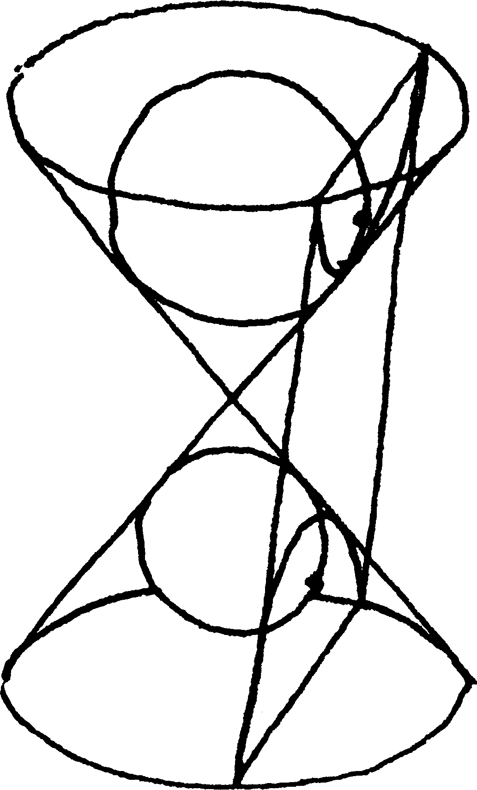
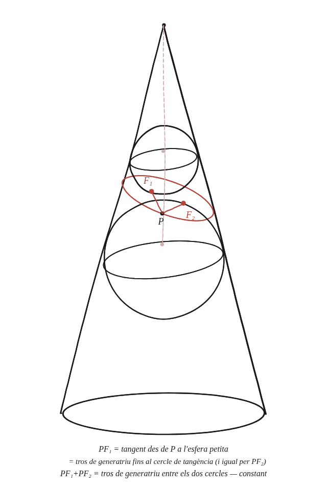

Pots treballar els detalls d'aquesta demostració?

Què hem de produir
Una demostració completa que la secció el·líptica d'un con —tallat per un pla que no travessa totes dues nappes— és de veritat una el·lipse: cal trobar dos punts F₁, F₂ (els focus) tals que, per a qualsevol punt P de la corba de tall, PF₁+PF₂ sigui una constant.
Dues esferes, cadascuna tocant el con i el pla
Dins de cada nappa del con —per damunt i per sota del pla de tall— hi cap exactament una esfera tangent tant a la superfície del con com al pla de tall. Anomenant F₁ i F₂ els dos punts on cada esfera toca el pla —aquests seran els focus—, per a un punt P qualsevol de la corba de tall, quina relació hi ha entre PF₁ i la distància, mesurada sobre la superfície del con, entre P i el cercle on la primera esfera hi és tangent?
La construcció

Tancar-ho
Dues maneres de mesurar la mateixa distància: (a) PF₁ és una tangent des de P a l'esfera 1 —i totes les tangents des d'un mateix punt a una esfera tenen la mateixa longitud. (b) El segment de la generatriu del con des de P fins al cercle de tangència amb l'esfera 1 és també una tangent des de P a aquesta mateixa esfera —la generatriu és tangent a l'esfera al llarg de tot el con. Per tant PF₁ és exactament aquest tros de generatriu. Igual per PF₂ amb l'esfera 2, cap a l'altre cercle de tangència. La suma PF₁+PF₂ és exactament la longitud del tros de generatriu entre els dos cercles de tangència —la mateixa per a qualsevol generatriu, perquè els dos cercles de tangència són fixos i no depenen de P.
Les dues esferes de Dandelin donen els focus de l'el·lipse: F₁ i F₂ són els punts on cada esfera toca el pla de tall, i PF₁+PF₂ és sempre igual a la longitud del tros de generatriu entre els dos cercles de tangència —constant per a qualsevol punt P de la corba.
Comprovació
Amb un con d'obertura 30° i un pla de tall concret, la suma PF₁+PF₂ calculada per a diversos punts P de la corba de tall —numèricament, amb les coordenades 3D reals— surt exactament la mateixa: en un cas verificat, 12,86 unitats per a qualsevol dels punts provats.
Aquest mateix argument —el mateix tram de recta, mesurat de dues maneres, forçat a ser igual— és el revés d'una altra qüestió sobre les circumferències com a el·lipses amb els dos focus fosos: allà es partia de la definició (dos focus, suma constant) i se'n deduïa que un cercle és el cas límit; aquí, en canvi, es parteix del con i es demostra que la corba resultant compleix la definició amb focus concrets. Quan el pla de tall és perpendicular a l'eix del con, les dues esferes de Dandelin queden igual de grans i tangents al mateix cercle —els dos focus col·lapsen en un de sol, exactament aquell cas límit.